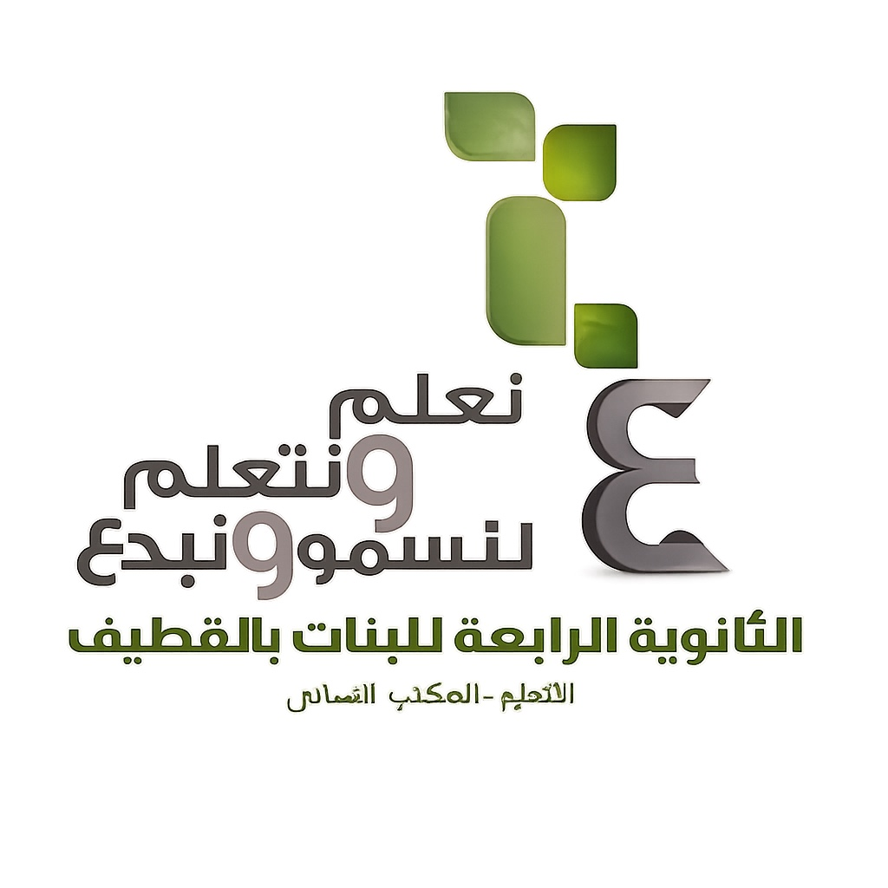

🧱
مختبر ماين كرافت
عوالم تعليمية، ملفات التجارب، وتوثيق مراحل البناء.

الثانوية الرابعة للبنات بالقطيف | منصة تعليمية للمختبرات والابتكار
نستكشف المفاهيم العلمية، نصمم التجارب، ونوثّق إنجازات طالباتنا عامًا بعد عام.
مشروع تعليمي قابل للتطويرعوالم تعليمية، ملفات التجارب، وتوثيق مراحل البناء.
أنشطة الحركة والطاقة والجاذبية والشغل والآلات.
تجارب العلوم والكيمياء والأحياء والمشاريع الاستقصائية.
أسئلة افتتاحية وتحديات جماعية وشارات إنجاز.
عرض صور ومقاطع أعمال الطالبات بعد الموافقة على النشر.
تجميع ملفات ونتائج كل عام دراسي في مكان منظم.
توثيق مرئي من مشروع المختبر السابق. يمكنك تشغيل المقاطع مباشرة داخل المنصة.
من أرشيف مشروع مختبرات ماين كرافت المدرسي.
من أرشيف مشروع مختبرات ماين كرافت المدرسي.
قبل نشر الموقع للعامة: يُرجى التأكد من موافقات المدرسة وأولياء الأمور إذا ظهرت طالبات أو بيانات شخصية في المقاطع.
ترتفع عربة على مسار، ثم تنطلق إلى أسفل. ما التحول الأساسي للطاقة أثناء النزول؟
يمكن للمعلمة تجربة إدخال مشروع هنا. هذه البيانات محفوظة على هذا الجهاز فقط وليست قاعدة بيانات مشتركة.
تنبيه: لا تُدخلي أسماء الطالبات أو بياناتهن الشخصية في هذه النسخة التجريبية. الحفظ المحلي قد يزول عند مسح بيانات المتصفح؛ استخدمي التصدير للاحتفاظ بنسخة.